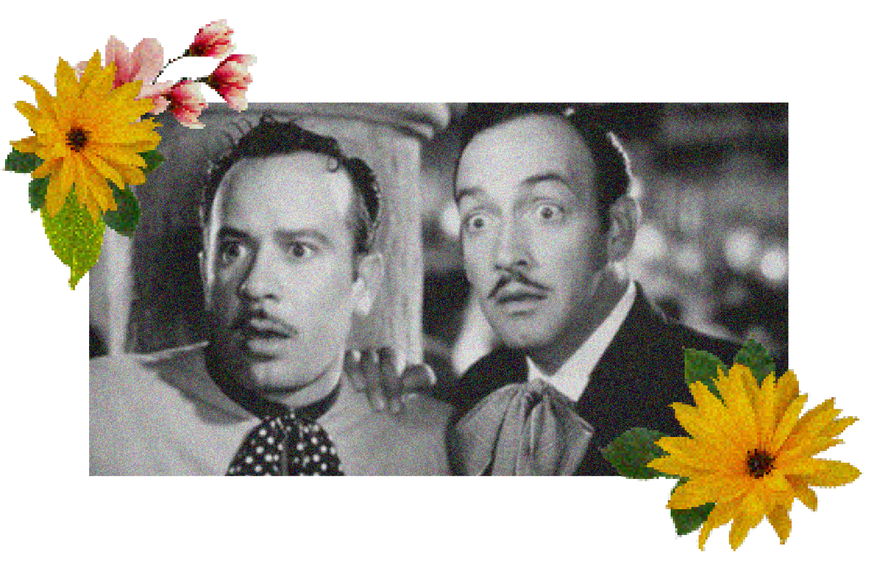
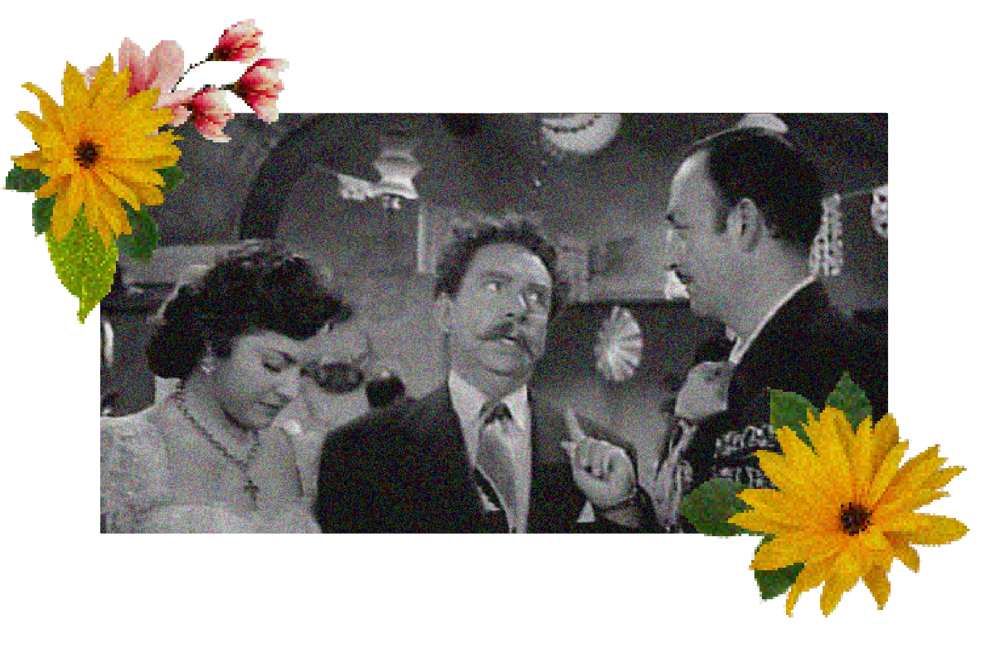
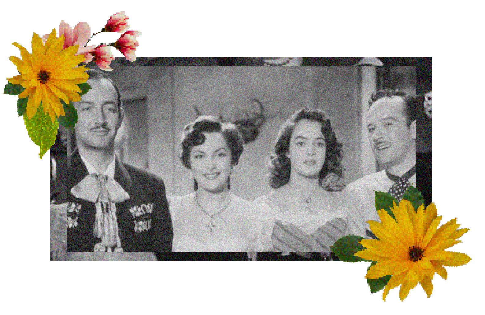

|
INICIO
|
||
|
¡Hola! En esta página encontrarás información, una reseña, y otros recursos sobre la película “Dos tipos de cuidado” (1953).    Es una película que disfruto mucho, y aunque es vieja creo que puede gustarle a personas jóvenes. Mi intención con esta página es que esta joya de los años 50 llegue a nuevas generaciones. |
||